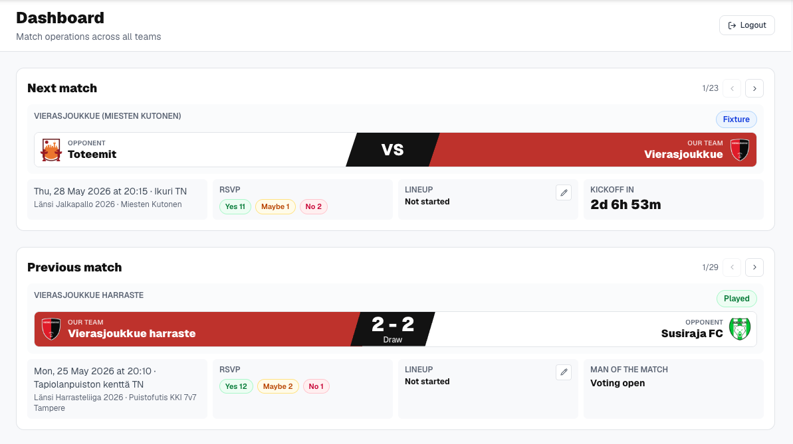

Operating system / integrations
BasePitch
A single operating workspace for a football club
A product for coaches, administrators, and volunteers: data, match preparation, player availability, and content workflows instead of scattered spreadsheets and chats.

Context
The club needed to bring recurring operational tasks and data from different sources into one understandable working process.
What I did
I integrated official match and player data, built match-preparation, availability-planning, and reminder flows, and added a module that finds team and player achievements and generates social-post drafts.
Outcome
The original version is used by one club; a first external club is joining an adaptation pilot.
Selected screens
Operating, schedule, line-up, and content workflows